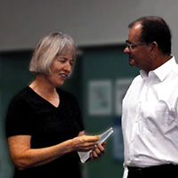

Jacinta Payne (Life Member since May 2015)

Jacinta has been part of the Orchestra from the beginning when she played 1st Clarinet at the first performance on Sunday, 29th October 2000. She has been on the management committee and was a voluntary manager of the Orchestra.
Jacinta has had the task of being Rehearsal Conductor on many occasions and conducted a performance in 2004. Over the years, through her teaching she has been able to encourage many players to join the Orchestra and has mentored many young woodwind players.
Alan Nixon (Life Member since May 2015)
Alan has been Secretary of North Queensland Ensembles Inc. /Barrier Reef Orchestra for eight years.
Stephen Frewen-Lord (Life Member since May 2015)
Stephen has been involved with the Barrier Reef Orchestra since its inception; having played as concert master in the orchestra’s inaugural concert in 2000.
Jenny Carr (Life Member since July 2010)
Jenny Carr came to Australia from Scotland in the early 70s and instantly became an integral part of the Townsville music scene as a pianist and instrumental music teacher.
Carol Dall'Osto (Life Member since July 2010)
Carol has been a leading figure in music performances in Townsville for many years despite living in Ingham until the early 2000s when she moved to Townsville.
Donna McMahon (Life Member since July 2010)
Donna has been a leader in the Townsville music community since she arrived in 1973 fresh from the Conservatorium to teach strings for Education Queensland. Read More
David Pearse (Life Member since June 2006)
David was heavily involved with the Townsville music scene from the 1970s, including the formation of the BRO in 1999. He was made a Life Member by the Committee in June 2006, when he and his wife Elizabeth left Townsville to live in Canberra.